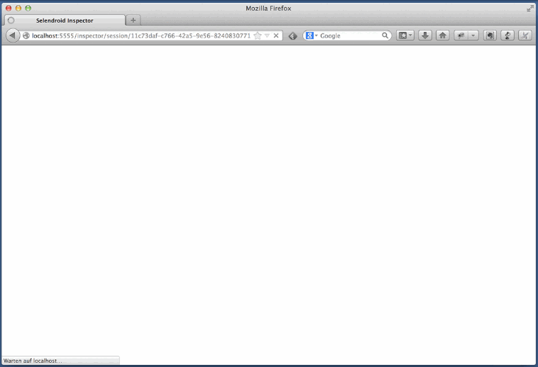

Selendroid comes with a useful little tool called Selendroid Inspector. It’s a little web app which is embedded inside your selendroid test server. Its purpose is to let you inspect the current state of your app’s UI.

When you have started selendroid-standalone and you have started a test session, you can find the web app at: http://localhost:5555/inspector
For displaying the html source code of a web view please follow these steps:
ctrl key (this keeps the selection of the element).Selendroid Inspector has a simple build in test case recorder that tries to identify the element that is clicked (on the screenshot) and saves the locator and click command into the Java tab.